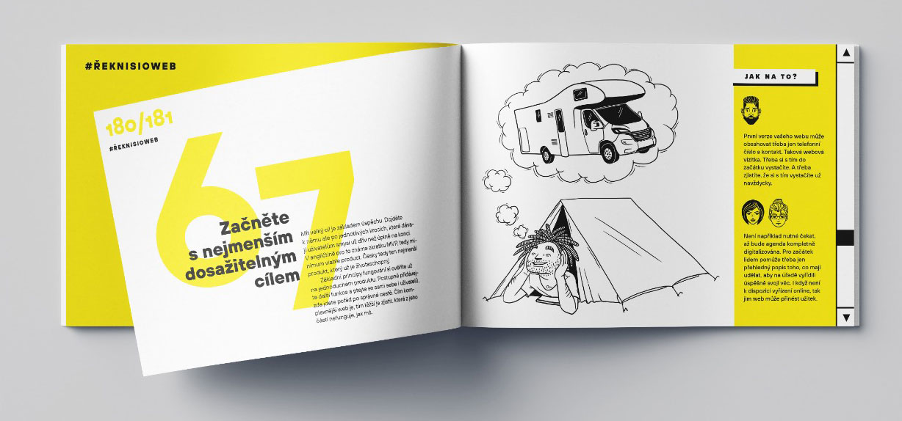
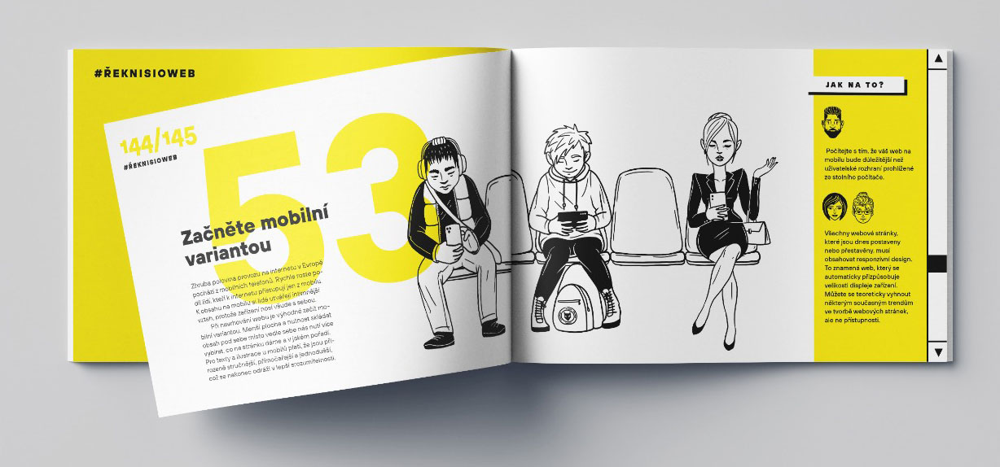
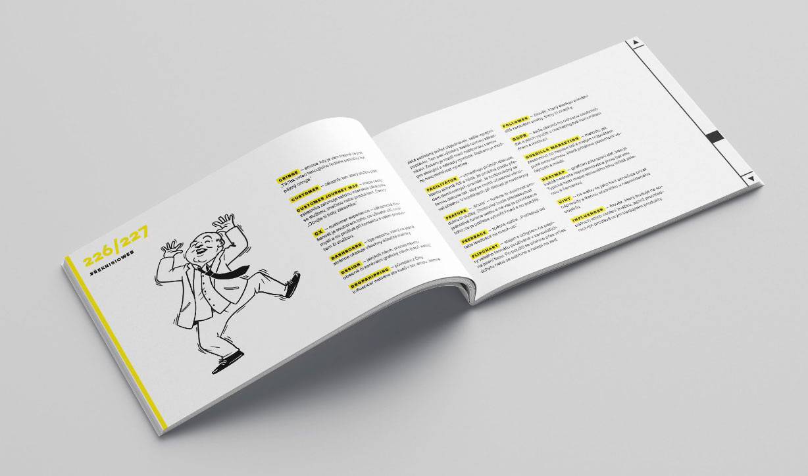
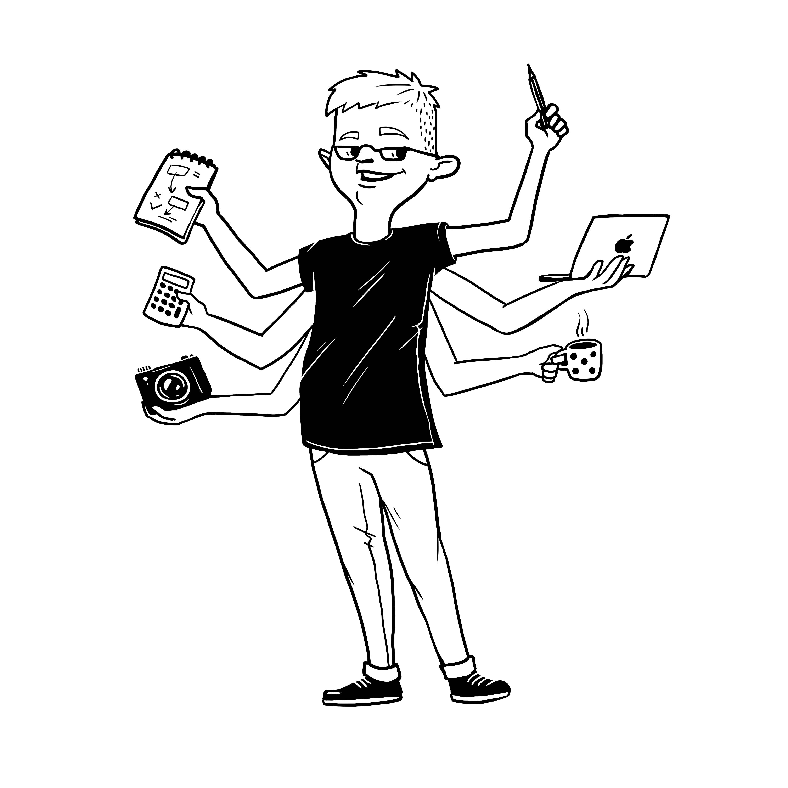
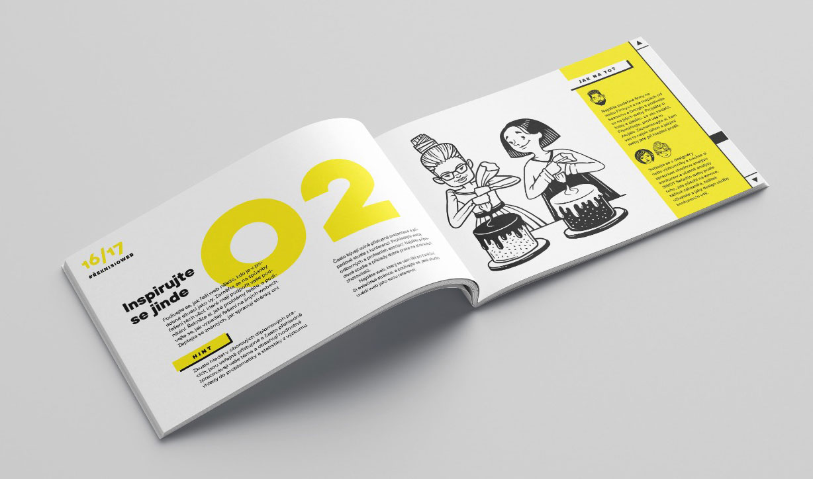
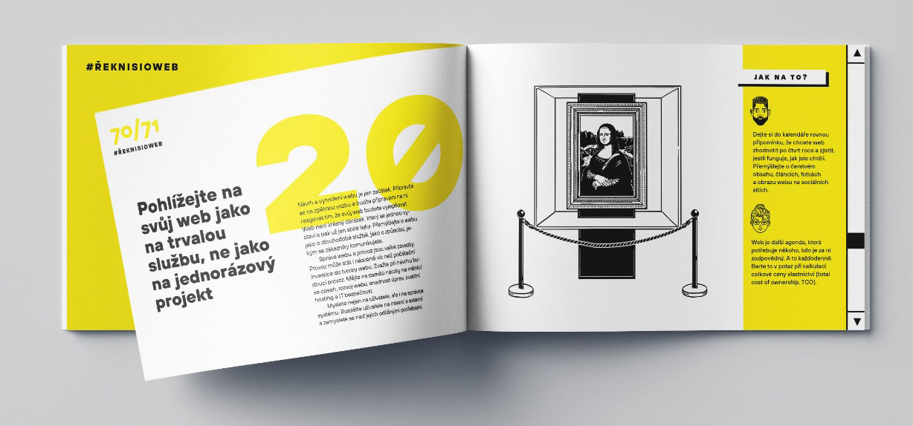
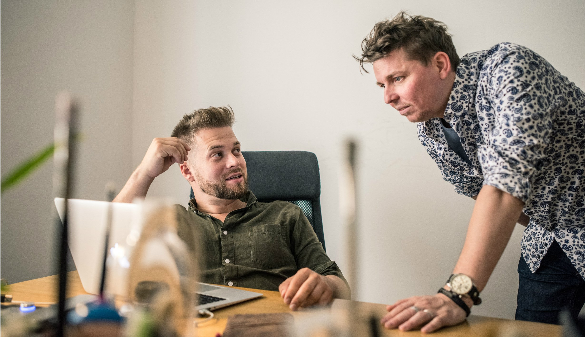

75 tipů, jak si říct o web
Praktická kniha plná návodů, jak se s designerem domluvit na dobře fungujícím webu
Nejdůležitější ze všeho je dobré zadání Začněte tím, čeho chcete webem dosáhnout. Zásadní je zjistit, v čem přesně máte problém, který chcete řešit. Poznejte svůj spouštěč: to, co stojí na začátku vaší potřeby si někomu říct o web. Nejprve si ujasněte, proč potřebujete postavit web. Nezačněte hned zadáním pro návrháře a programátory. K tomu se musíte propracovat.
 75 praktických tipů pro okamžité vyzkoušení.
Řekli o naší knize:
Každý chceme mít krásný a srozumitelný web. Je ale těžké konkretizovat vlastní představu tak, aby ji pro vás někdo mohl realizovat, a to ještě dostatečně rychle a levně. Tahle knížka vám ušetří hromadu peněz i času. Je napsaná s obrovskou zkušeností z oboru, je srozumitelná a názorná. Zvlášť oceňuju to, že autoři nezapomněli ani na zadavatele webů ze státní správy, protože skvělou komunikaci potřebujeme i jinde než v byznysu. Až budu příště zadávat výrobu nebo úpravy webu, projdu si nejdřív tuhle knížku bod po bodu.
Kniha se mi dostala do ruky ve chvíli, kdy už jsme se pár týdnů trápili s novým webem a tím, co od něj chceme. Za víkend jsem Tipy přečetla, promyslela a zápisky poslala designérovi, se kterým spolupracujeme. „Dobré dopoledne! Moc děkuji za zadání, takto to přesně potřebujeme,“ odpověděl. Teď mi přišel první nástřel. A je to přesně tak, jak jsem chtěla. Děkuju.
Nadmíru užitečná příručka, která vás bezpečně provede všemi úskalími tvorby nového webu.
Skvělá knížka. Četl jsem ji a mohu zcela upřímně říct, že pokud si chcete začít řešit svůj web, tuhle knížku byste při tom rozhodně měli mít v ruce.
Názorné příklady a 75 praktických tipů
Kniha spojuje několik přístupů. Přináší praktické rady, nahlížené ze 3 různých úhlů pohledu. Některým tématům jako například brief se věnuje v samostatných kapitolách podrobněji.
 Jednoduše vysvětlené základní principy .
Efektivní komunikace: Naučte se jasně definovat své požadavky a úspěšně komunikovat se svými webovými designéry, abyste získali přesně to, co potřebujete.
 Kniha obsahuje užitečný slovníček nejčastějších IT pojmů
 O ilustrace knížky se postarala Kateřina Čápová
Základy webového designu: Pochopit základní principy webového designu a rozpoznat kvalitu práce pro lepší kontrolu nad výsledkem projektu.
 Překonává bariéry mezi zadavatelem a designéry.
Úspora času a peněz: S našimi tipy a radami ušetříte čas i peníze díky efektivnějšímu zadání a realizaci webového projektu.
První kniha pro zadavatele v češině!
Tuto knihu jsme napsali pro ty z vás, kteří potřebují pomoc teď a tady. Napsali jsme ji jasně a srozumitelně, aby se dala snadno číst a jednotlivé rady na sebe logicky navazovaly, ale aby se dala otevřít na jakékoli dvoustraně a rovnou použít v praxi.
 Praktické tipy pro okamžité vyzkoušení.
Pro koho a proč jsme knihu psali?
Naši klienti se nás často ptají na to, koho vlastně mají poptat. Jak mají postupovat? Jaké profese budou potřebovat, Naše kniha přináší především pro
- Podnikatele
- Manažery
- Pracovníky ve státní správě.
Co se dozvím v knížce 75 tipů, jak si říci o web?
- Zjistíte co si můžete udělat sami a na co budete potřebovat pomoc odborníka
- Pomůžeme vám, jak začít
- Budete silnější při domlování s dodavateli
- Ujasníte si, co na web chcete dávat za obsah
- ... a mnoho dalšího!
Autoři knihy
Jakub Goldmann
Designér a školitel, věnuje se přednáškám, mentoringu a start-upům, vede designérskou agenturu Švejda–Goldmann v Praze. Specializuje se na webdesign pro velké vydavatelské domy, fintech disruptivní startupy a mobilní aplikace. V knize
přináší rady klientům, kteří nevědí, jak do digitálního prostředí vstoupit.
LinkedIn - Jakub Goldmann
jakubgoldmann.cz
Martin Kopta
Produktový manažer na digitálních platformách. Inicioval založení magisterské specializace na UX design na Fakultě informatiky a statistiky VŠE v Praze, kde také vyučuje. S Jakubem Goldmannem se pracovně setkal v designérském týmu Seznamu
a společně pak pracovali na dalších projektech.
LinkedIn - Martin Kopta
martinkopta.cz
Josef Platil
Produktový manažer pro PIM & BIM ve společnosti Wienerberger AG. Zakládající člen digitálního hubu pro inovace. Vede vývoj, testování a implementaci inovativních přístupů digitalizace stavebnictví. Má patnáct let zkušeností z mezinárodních
firem, z toho posledních deset let pracuje jako IT projektový manažer. Do knihy přispěl pohledem člověka, který od designérů přejímá návrh řešení a je zodpovědný za jeho implementaci.
LinkedIn - Josef Platil
 75 praktických tipů pro okamžité vyzkoušení.
Tato kniha vznikla za laskavé podpory Švejda Goldmann, s.r.o.
Společnost se specializuje na praktický průzkum a navrhování vizuálního designu a uživatelského rozhraní pro internetové prezentace a aplikace. Její portfolio zahrnuje na stovky realizací, návrhů, redesignů a tištěných projektů. Prioritou
je výběr projektů, které umožňují odborný růst a zároveň přinášejí klientům významné výsledky.
www.svejda-goldmann.cz
Kateřina Čápová - ilustrace
Vystudovala střední a vyšší odbornou výtvarnou školu Václava Hollara. Od roku 2010 pracuje ve společnosti Seznam jako Graphic Designer a UI Designer. Ilustrátorka knihy Jak si dobře říct o web.
LinkedIn - Kateřina Čápová
Albatros media, cPress
- Náklad
- ISBN
- Cena
- Počet stran